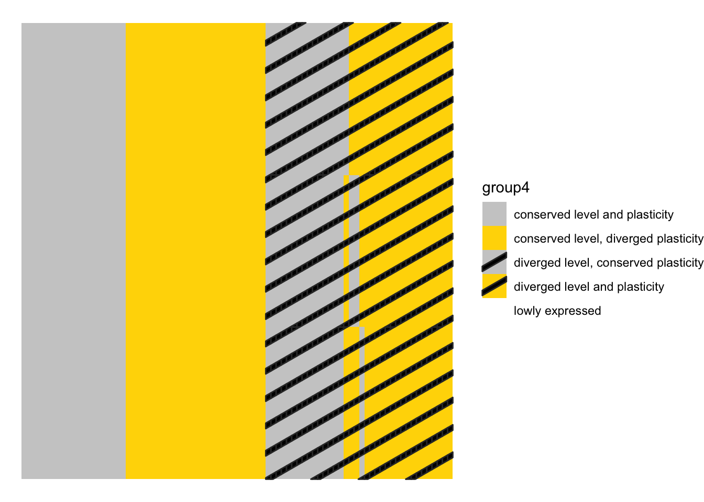

Clustering QC
TODO: 1) Make this not just one chunk 2) repeat for dispersion
sapply(c("WGCNA", "stringr", "ggplot2", "RColorBrewer", "ggpubr", "grid", "ComplexHeatmap", "circlize", "huxtable"), require, character.only=TRUE)## Loading required package: huxtable##
## Attaching package: 'huxtable'## The following object is masked from 'package:dplyr':
##
## add_rownames## The following object is masked from 'package:ggpubr':
##
## font## The following object is masked from 'package:ggplot2':
##
## theme_grey## WGCNA stringr ggplot2
## TRUE TRUE TRUE
## RColorBrewer ggpubr grid
## TRUE TRUE TRUE
## ComplexHeatmap circlize huxtable
## TRUE TRUE TRUEsource("functions_for_figure_scripts.R")
# Script to compare how number of clusters changes which genes are called
# as diverging in plasticity
load("data_files/QC_CorrelationClustering.RData")
load("data_files/FinalDataframe3Disp.RData")
clusterdf_list2 <- clusterdf_list
rm(clusterdf_list)
# dataframe of nClust = 2, 3, and 4 clustering results
clustdf <- select(finaldf, gene_name, experiment, level, cer, par) |>
dplyr::rename(c("cer2"="cer", "par2"="par", "gene_ID"="gene_name")) |>
left_join(rename(clusterdf3, c("cer3"="cer", "par3"="par")),
by = c("gene_ID", "experiment")) |>
left_join(rename(clusterdf4, c("cer4"="cer", "par4"="par")),
by = c("gene_ID", "experiment"))
#### Visualize cluster expression patterns in each experiment ####
display.brewer.all()
# color palettes we'll use for the 6 environments
palettedf <- tibble(experiment = ExperimentNames,
palette = c("Greys", "YlGn", "Greens", "Purples", "YlOrBr", "BuPu"),
long_name = LongExperimentNames)
plotClusterPatternByExperiment <- function(.df, .experiment, .title = NULL) {
plotdf <- summarise(group_by(.df, time_point_num, label),
mean_expr = mean(expr, na.rm = TRUE))
plotdf$label <- as.factor(plotdf$label)
color_plt <- palettedf |> filter(experiment == .experiment) |> select(palette) |> pull()
if (is.null(.title)) {
.title <- palettedf |> filter(experiment == .experiment) |> select(long_name) |> pull()
}
ggplot(plotdf, aes(x = time_point_num, y = log2(mean_expr + 1))) +
geom_line(aes(group = label, color = label), linewidth = 4) +
geom_point(color = "black", alpha = 0.4) +
xlab("timepoint (min)") +
ylab("expression (log2)") +
scale_color_brewer(palette = color_plt, name = "cluster",
direction = -1) +
theme_classic() +
theme(legend.position = "right") +
ggtitle(.title)
}
# 2 clusters
pdf("../../aligning_the_molecular_phenotype/paper_figures/Supplement/cluster_ref_2.pdf",
width = 8, height = 4)
ggarrange(plotClusterPatternByExperiment(clusterdf_list2$HAP4_2$df, .experiment = "HAP4"),
plotClusterPatternByExperiment(clusterdf_list2$CC_2$df, .experiment = "CC"),
plotClusterPatternByExperiment(clusterdf_list2$LowN_2$df, .experiment = "LowN"),
plotClusterPatternByExperiment(clusterdf_list2$LowPi_2$df, .experiment = "LowPi"),
plotClusterPatternByExperiment(clusterdf_list2$Heat_2$df, .experiment = "Heat"),
plotClusterPatternByExperiment(clusterdf_list2$Cold_2$df, .experiment = "Cold"),
nrow = 2, ncol = 3, common.legend = FALSE)## `summarise()` has grouped output by 'time_point_num'.
## You can override using the `.groups` argument.## `summarise()` has grouped output by 'time_point_num'.
## You can override using the `.groups` argument.
## `summarise()` has grouped output by 'time_point_num'.
## You can override using the `.groups` argument.
## `summarise()` has grouped output by 'time_point_num'.
## You can override using the `.groups` argument.
## `summarise()` has grouped output by 'time_point_num'.
## You can override using the `.groups` argument.
## `summarise()` has grouped output by 'time_point_num'.
## You can override using the `.groups` argument.dev.off()## quartz_off_screen
## 2# 3 clusters
pdf("../../aligning_the_molecular_phenotype/paper_figures/Supplement/cluster_ref_3.pdf",
width = 8, height = 4)
ggarrange(plotClusterPatternByExperiment(clusterdf_list3$HAP4_3$df, .experiment = "HAP4"),
plotClusterPatternByExperiment(clusterdf_list3$CC_3$df, .experiment = "CC"),
plotClusterPatternByExperiment(clusterdf_list3$LowN_3$df, .experiment = "LowN"),
plotClusterPatternByExperiment(clusterdf_list3$LowPi_3$df, .experiment = "LowPi"),
plotClusterPatternByExperiment(clusterdf_list3$Heat_3$df, .experiment = "Heat"),
plotClusterPatternByExperiment(clusterdf_list3$Cold_3$df, .experiment = "Cold"),
nrow = 2, ncol = 3, common.legend = FALSE)## `summarise()` has grouped output by 'time_point_num'.
## You can override using the `.groups` argument.
## `summarise()` has grouped output by 'time_point_num'.
## You can override using the `.groups` argument.
## `summarise()` has grouped output by 'time_point_num'.
## You can override using the `.groups` argument.
## `summarise()` has grouped output by 'time_point_num'.
## You can override using the `.groups` argument.
## `summarise()` has grouped output by 'time_point_num'.
## You can override using the `.groups` argument.
## `summarise()` has grouped output by 'time_point_num'.
## You can override using the `.groups` argument.dev.off()## quartz_off_screen
## 2# 4 clusters
pdf("../../aligning_the_molecular_phenotype/paper_figures/Supplement/cluster_ref_4.pdf",
width = 8, height = 4)
ggarrange(plotClusterPatternByExperiment(clusterdf_list4$HAP4_4$df, .experiment = "HAP4"),
plotClusterPatternByExperiment(clusterdf_list4$CC_4$df, .experiment = "CC"),
plotClusterPatternByExperiment(clusterdf_list4$LowN_4$df, .experiment = "LowN"),
plotClusterPatternByExperiment(clusterdf_list4$LowPi_4$df, .experiment = "LowPi"),
plotClusterPatternByExperiment(clusterdf_list4$Heat_4$df, .experiment = "Heat"),
plotClusterPatternByExperiment(clusterdf_list4$Cold_4$df, .experiment = "Cold"),
nrow = 2, ncol = 3, common.legend = FALSE)## `summarise()` has grouped output by 'time_point_num'.
## You can override using the `.groups` argument.
## `summarise()` has grouped output by 'time_point_num'.
## You can override using the `.groups` argument.
## `summarise()` has grouped output by 'time_point_num'.
## You can override using the `.groups` argument.
## `summarise()` has grouped output by 'time_point_num'.
## You can override using the `.groups` argument.
## `summarise()` has grouped output by 'time_point_num'.
## You can override using the `.groups` argument.
## `summarise()` has grouped output by 'time_point_num'.
## You can override using the `.groups` argument.dev.off()## quartz_off_screen
## 2#### How does numbers of clusters affect which divergence group genes are in? ####
# given an experiment name, extracts the full matrix of nClust=2,3,4 x nGenes
# where each cell is the 4-group expression divergence category
getClusterQCHeatmap <- function(.e) {
plot_cer <- clustdf |> filter(experiment == .e) |>
pivot_longer(cols = c("cer2", "cer3", "cer4"),
names_to = "nclust", values_to = "cer") |>
select(gene_ID, level, nclust, cer)
plot_cer$nclust <- gsub("cer", "", plot_cer$nclust)
plot_par <- clustdf |> filter(experiment == .e) |>
pivot_longer(cols = c("par2", "par3", "par4"),
names_to = "nclust", values_to = "par") |>
select(gene_ID, level, nclust, par)
plot_par$nclust <- gsub("par", "", plot_par$nclust)
plotdf <- full_join(plot_cer, plot_par,
by = c("gene_ID", "level", "nclust")) |>
mutate(plasticity = if_else(cer == par,
true = "conserved",
false = "diverged"))
plotdf$group4 <- map2(plotdf$level, plotdf$plasticity, \(l, d) {
if (l != "diverged" & d == "conserved") {
return("conserved level and plasticity")
}
if (l != "diverged" & d == "diverged") {
return("conserved level, diverged plasticity")
}
if (l == "diverged" & d == "conserved") {
return("diverged level, conserved plasticity")
}
if (l == "diverged" & d == "diverged") {
return("diverged level and plasticity")
}
}) |> unlist()
plot_mat_e <- plotdf |> select(gene_ID, nclust, group4) |>
pivot_wider(id_cols = gene_ID, names_from = nclust,
values_from = group4) |> t()
colnames(plot_mat_e) <- plot_mat_e[1,]
plot_mat_e <- plot_mat_e[-1,]
ordered_plot_mat <- orderGenesByGroup(.mat = plot_mat_e)
clrs <- structure(colordf[colordf$scheme == "group4",]$type,
names = colordf[colordf$scheme == "group4",]$limits)
return(ordered_plot_mat)
}
# tests for getClusterQCHeatmap
test <- getClusterQCHeatmap(.e = "HAP4")
dim(test)## [1] 3 4286table(test[1,])##
## conserved level and plasticity
## 2084
## conserved level, diverged plasticity
## 1013
## diverged level and plasticity
## 442
## diverged level, conserved plasticity
## 747test0 <- test[, c(1:20, 2087:2107, 3092:3112, 3844:3864)]
# plots the 4-group expression divergence matrix as a heatmap
plotClusterQCHeatmap <- function(.mat, .legend = FALSE) {
.df <- bind_rows(tibble(gene_name = colnames(.mat),
nclust = 2,
group4 = .mat[1,],
x = c(1:ncol(.mat)),
y = 3),
tibble(gene_name = colnames(.mat),
nclust = 3,
group4 = .mat[2,],
x = c(1:ncol(.mat)),
y = 2),
tibble(gene_name = colnames(.mat),
nclust = 4,
group4 = .mat[3,],
x = c(1:ncol(.mat)),
y = 1))
p <- ggplot(.df, aes(x = x, y = y, fill = group4)) +
geom_tile_pattern(aes(fill = group4, pattern = group4), pattern_fill = "black") +
scale_fill_discrete(limits = colordf[colordf$scheme == "group4",]$limits,
type = colordf[colordf$scheme == "group4",]$type) +
scale_pattern_discrete(limits = colordf[colordf$scheme == "group4",]$limits,
choices = colordf[colordf$scheme == "group4",]$pattern) +
theme_void()
if (!.legend) {
p <- p + theme(legend.position = "none")
}
if (.legend) {
p <- p + theme(legend.position = "right")
}
return(p)
}
# tests for plotClusterQCHeatmap
plotClusterQCHeatmap(.mat = test0, .legend = TRUE)
# discrete heatmaps
for (e in c("Heat", "Cold")) {
cat("working on", e, "\n")
plot_mat_e <- getClusterQCHeatmap(.e = e)
pdf(file = paste0("../../aligning_the_molecular_phenotype/paper_figures/Supplement/nclust_heatmap_", e, "UGH.pdf"),
width = 9, height = 1)
print(plotClusterQCHeatmap(plot_mat_e))
dev.off()
}## working on Heat## working on Cold### Percents of nClust=2 plasticity-divergers also labeled as plasticity-divergers
# in nClust=3
sum((clustdf$cer2 != clustdf$par2) & (clustdf$cer3 != clustdf$par3))/sum(clustdf$cer2 != clustdf$par2)## [1] 0.9735714# in nClust=4
sum((clustdf$cer2 != clustdf$par2) & (clustdf$cer4 != clustdf$par4))/sum(clustdf$cer2 != clustdf$par2)## [1] 0.9763265# The reverse: percents of nClust=3 or 4 plasticity-divergers
# also labeled as plasticity-divergers in nClust=2
# nClust=3
sum((clustdf$cer3 != clustdf$par3) & (clustdf$cer2 != clustdf$par2))/sum(clustdf$cer3 != clustdf$par3)## [1] 0.8300853# nClust=4
sum((clustdf$cer4 != clustdf$par4) & (clustdf$cer2 != clustdf$par2))/sum(clustdf$cer4 != clustdf$par4)## [1] 0.8004685# conclusion: nClust=2 is most conservative, a near perfect subset of nClust=3/4
#### Comparing different low variance thresholds (min dispersion) ####